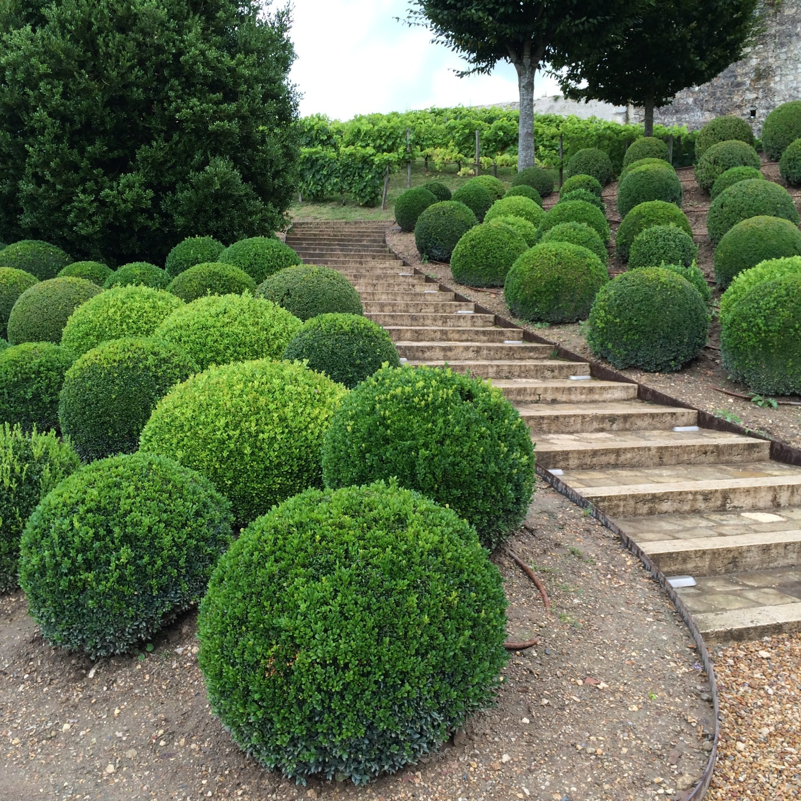
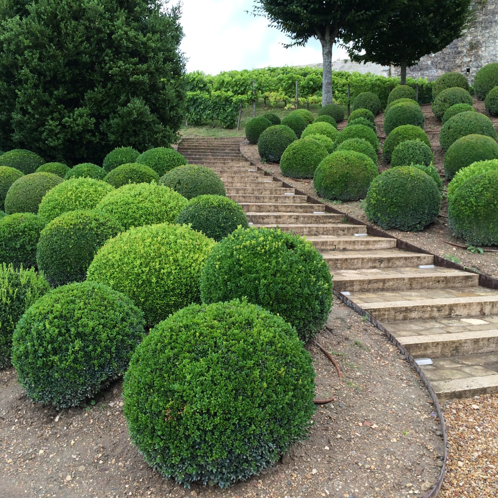

About Frosty Garden Pruning
At Frosty Garden Pruning, we combine the art of expert pruning with the calm, fresh beauty of frosted gardens. Our specialized team understands the delicate balance between precision trimming and preserving the natural aesthetics of your garden.
Whether it’s winter or summer, our services ensure that your plants, shrubs, and trees maintain their optimal health and appealing structure. Frosty Garden Pruning helps prevent disease, encourages healthy growth, and enhances overall garden appearance.
We prioritize sustainable practices, using environmentally safe techniques to promote longevity in your green space. Our experienced gardeners are passionate about transforming your garden into an enchanting frosty paradise that revitalizes every season.
We serve New York and the surrounding areas with reliable, professional pruning services tailored to residential and commercial gardens alike. Our commitment to quality and customer satisfaction is reflected in every project and garden we care for.
Our pruning philosophy: Pruning is both an art and a science. We carefully tailor our approach to each plant’s needs, using precise cuts to encourage healthy growth while maintaining the natural beauty and frost charm of your garden.
Our trained arborists and horticulturists use advanced pruning techniques that improve air circulation, sunlight exposure, and overall plant vitality. Through careful timing and expert knowledge, we ensure your plants remain robust and picture-perfect year-round.
We also focus on frost damage repair by safely removing dead or damaged branches after cold snaps to prevent disease and to enable rapid spring recovery. Our service helps preserve your garden’s charm no matter the weather.
Our team is passionate about green sustainability, reducing waste with composting options and environmentally friendly tools and products. Being eco-conscious enhances the health of your plants, soil, and the greater ecosystem.
From small residential gardens to expansive commercial landscapes, Frosty Garden Pruning delivers dependable, tailored pruning with friendly customer service as our priority.


 
